編集部まとめ記事 一覧
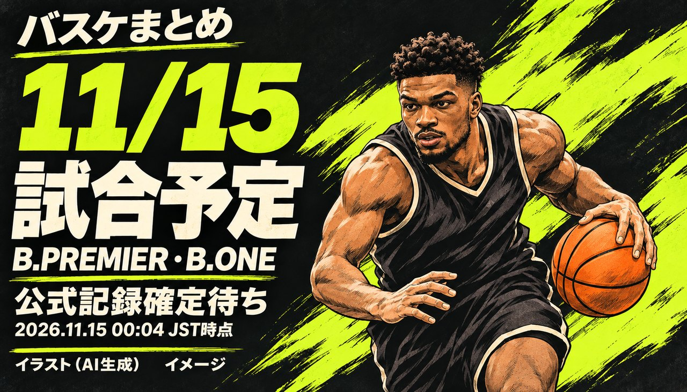
順位・日程
11/15 出場予定選手（登録選手）のベスト5
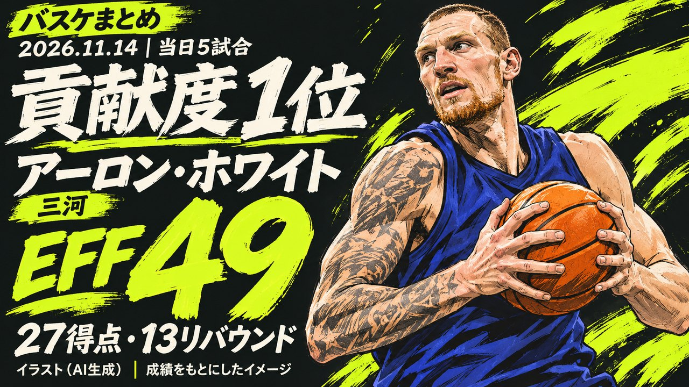
順位・日程
11月14日の貢献度ランキング 1位はアーロン・ホワイト（三河）の49
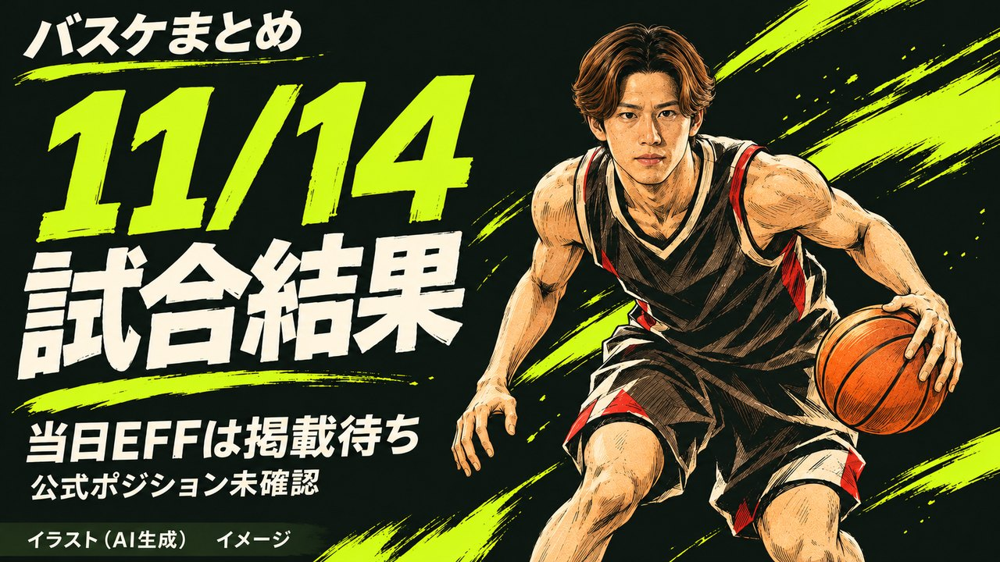
試合結果
11/14 試合結果・当日のEFF
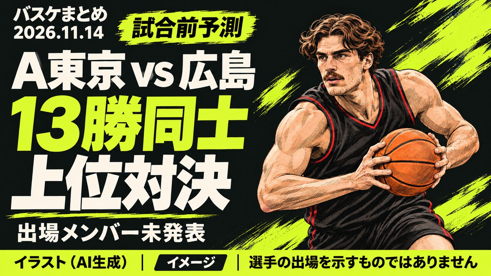
試合結果
アルバルク東京対広島ドラゴンフライズの試合前予測、13勝同士の上位対決は得点力の差で読む
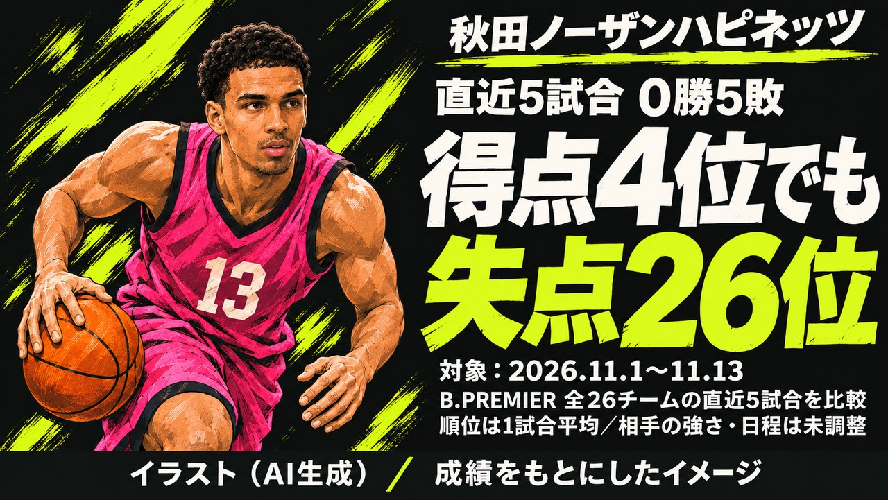
試合結果
秋田ノーザンハピネッツ 直近5試合は0勝5敗 得点は4位でも失点が26位

順位・日程
11月13日の貢献度ランキング 1位はケリー・ブラックシアー・ジュニア（群馬）の46
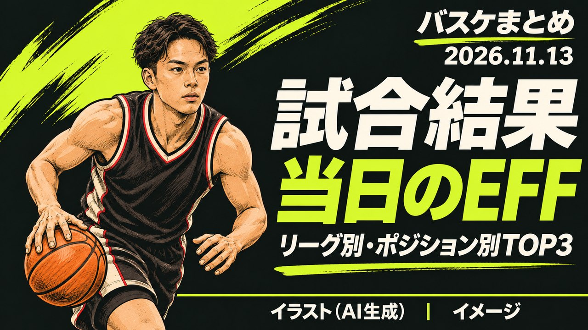
試合結果
11/13 試合結果・当日のEFF

順位・日程
京都ハンナリーズ対茨城ロボッツの試合前予測、5連敗の京都と3連勝の茨城
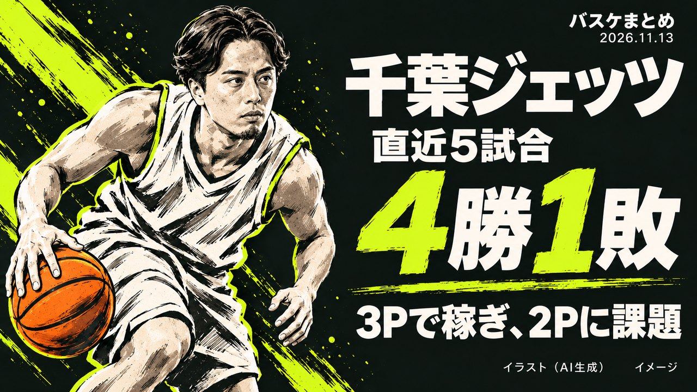
試合結果
千葉ジェッツは直近5試合で4勝1敗 平均94.8点はリーグ最多、3Pで稼ぎ2Pで失う

順位・日程
11月12日の貢献度ランキング 1位はブライアン・アンゴラ（富山）の48
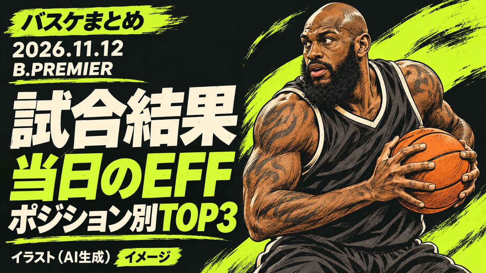
試合結果
11/12 試合結果・当日のEFF

順位・日程
琉球ゴールデンキングス対東京SRの試合前予測、3連敗のキングスは攻撃力をどう止めるか

試合結果
佐賀バルーナーズの直近5試合は0勝5敗 前半の失点と守備の数字が重い

順位・日程
11月11日の貢献度ランキング 1位はジャレット・カルバー（仙台）の42
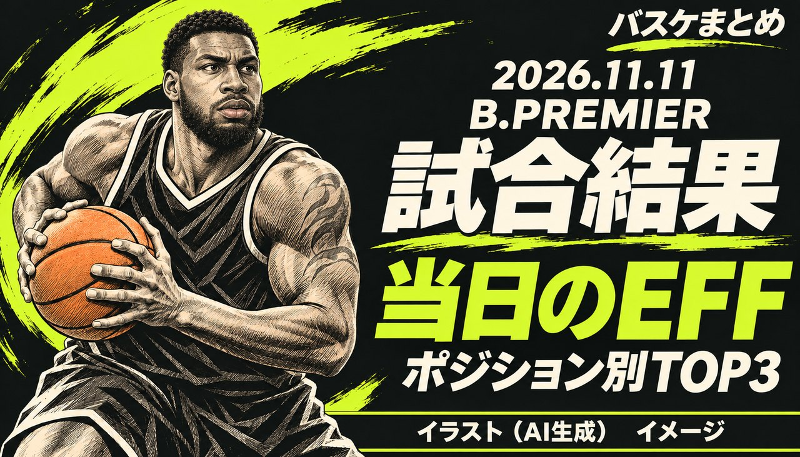
試合結果
11/11 試合結果・当日のEFF

順位・日程
長崎ヴェルカ対A東京の試合前予測、3連敗の長崎はリバウンド差10本が壁
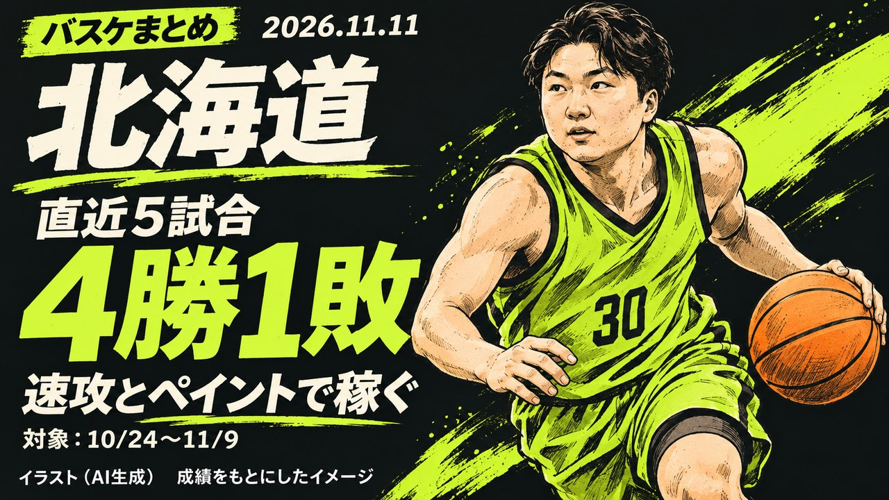
試合結果
レバンガ北海道の直近5試合は4勝1敗 速攻とペイントで稼ぎ3Pは最少

順位・日程
11月10日の貢献度ランキング 1位はラウリー・アルキンズ（東京SR）の44
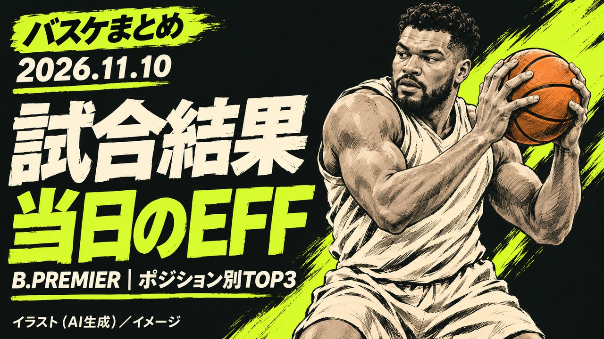
試合結果
11/10 試合結果・当日のEFF

順位・日程
千葉ジェッツ対大阪の試合前予測、ウィリアムズ離脱でもコステロが復帰
最終更新: 2026年11月15日 03:18